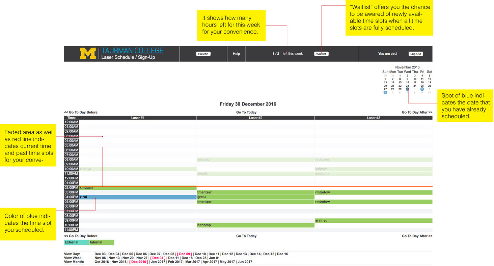
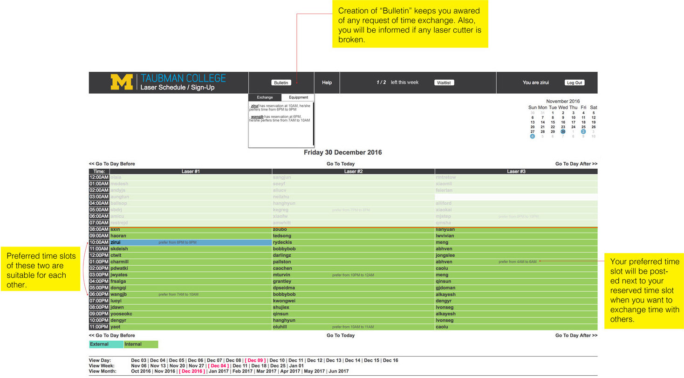
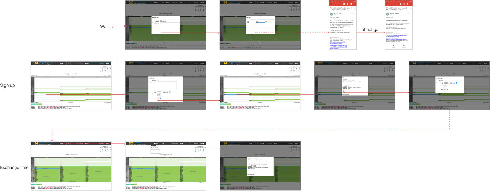

Lasercut Scheduler Website
This is a peoject I collaborated with two of my friends, Zirui and Yi, who were my classmates in March program in UMich.
Due to some problems we encountered when scheduling lasercutter in busy times, we have proposed a redesign to optimize it.
We shared many work together.

UX Redesign _ Website
2017.01
Partners: Zirui Wang/ Yi Luo
My Work: Competitor Analysis/ Brainstorm/ Wireframe Sketch/ UI
PROBLEM
For architecture students, laser cutting is essential for physical model making. In Taubman College, the problem of limited facilities is always the concern since there are over 200 architecture major students and only 3 laser cutters. Therefore, during the mid-term and final week, architecture students always have trouble gaining enough time slots for laser cutting which may cause incompletion of physical architecture model. Inefficient application of Laser Schedule Website results in inefficient access to updated resource of Laser Cutters.
There is no chance for students, who need the time of laser cutting, to obtain information immediately of available laser time slots since other students either may finish their work ahead of time or desire to exchange their time slots.
“During the final week, I have to stay around laser cutters all night waiting for available laser cutters because that other students may finish their work ahead of time. I have no choice since I ran out of 2 hours limit of laser cutting per week and I have too much work to do.” -Zirui Wang, M.Arch
FINAL DESIGN
Main Interface_ Schedule Time

1. Make you aware of time slots you have already reserved.
2. You will receive notifications of newly available time slots if you are on the waitlist.
3. It is clear to see how many hours you reserved and when you will laser cut.
4. Make you aware of current time.
5. Highlight the spot in blue of the time slot you reserved on this page.
Main Interface_ Exchange Time

1. If you are dissatisfied with time slots you reserved, you can add your preferred time range for time exchange.
2. Bulletin will show information of laser cutter status and who is willing to exchange time.
Workflow

If there is an available seat, the system would send an email to all members in the waitlist. So students do not have to wait beside laser cutter to get a seat. Also, students can easily inform others about their idea of exchanging time through the bulletin and sign-up chart.